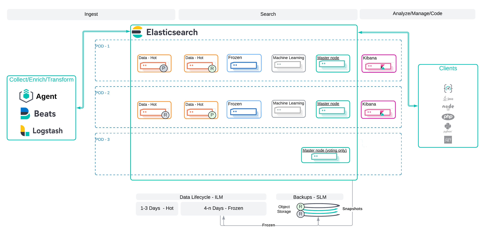

Elastic Highly Available Architecture: Self Managed - Single Datacenter
editElastic Highly Available Architecture: Self Managed - Single Datacenter
editThis architecture ensures high availability during normal operations and node maintenance. It includes all necessary Elastic Stack components but is not intended for workload sizing. Use this pattern as a foundation and extend it to meet your specific needs. While it represents data flow for context, implementations may vary. Key design elements include the number and location of master nodes, data nodes, zone awareness, and shard allocation strategy. For more details, see Resilience in larger clusters - Two-zone clusters. This design does not cover cross-region (geographically diverse) disaster recovery.
While this architecture does include a representation of a data flow, this is being provided for contextual understanding and may differ from implementation to implementation. The critical portion of the design is the number and location of master nodes, the location of data nodes, zone awareness and the shard allocation strategy. For additional information see this reference. This design does not address cross region (i.e. geographically diverse) disaster recovery.
Use Case
editThis architecture is intended for organizations that need to:
- Be used for data that is written once and not updated (e.g. logs, metrics or even an accounting ledger where balance updates are done via additional offsetting entries)
- Be resilient to hardware failures
- Ensure availability during operational maintenance of any given (zone i.e. POD in the diagram)
- Maintain a single copy of the data during maintenance
- Leverage a Frozen Data tier as part of the Information Lifecycle
- Leverage a Snapshot Repository for additional recovery options
Architecture
edit
Important Considerations
editThe following list are important conderations for this architecture:
-
Operate
- Maintenance will be done only on one POD at a time.
- A yellow cluster state is acceptable during maintenance. (This will be due to replica shards being unassigned.)
-
Sample Initial Settings / Configuration:
- 3 Master Nodes (1 that is voting only) - Note: an odd number of initial master nodes is required.
- 4 Hot Data Nodes; 2 Frozen Nodes
- 1 Primary; 1 Replica **Machine Learning Nodes - Optional (1 per POD-1, 2)
- Index - total_shards_per_node = 1 (assuming there will be always more nodes than shards needed). This will prevent hot-spotting. This should; however, be relaxed to total_shards_per_node = 2 if the number of nodes and required number of shards are equal or close to equal due to the shard allocation processes being opportunistic. (i.e. if overly aggressive, shards could be placed in a way to create a situation where a shard could not be allocated - and create a yellow cluster state)
- Set up a repository for the frozen tier.
- Set up a snapshot repository.
-
Shard Management:
-
The most important foundational step to maintaining performance as you scale is proper shard sizing, location, count, and shard distribution. For a complete understanding of what shards are and how they should be used please review this documentation page.
- Sizing: Maintain shard sizes within recommended ranges and aim for an optimal number of shards.
-
Distribution: In a distributed system, any distributed process is only as fast as the slowest node. As a result, it is optimal to maintain indexes with a primary shard count that is a multiple of the node count in a given tier. This creates even distribution of processing and prevents hotspots.
- Shard distribution should be enforced using the ‘total shards per node’ index level setting
-
For consistent index level settings is it easiest to use index lifecycle management with index templates, please see the section below for more detail.
- Shard allocation awareness: To prevent both a primary and a replica from being copied to the same zone, or in this case the same pod, you can use shard allocation awareness and define a simple attribute in the elaticsearch.yaml file on a per-node basis to make Elasticsearch aware of the physical topology and route shards appropriately. In deployment models with multiple availability zones, AZ’s would be used in place of pod location.
-
Forced Awareness: This should be set in In order to prevent Elastic from trying to create replica shards when a given POD is down for maintenance.
- Use this tier for ingestion. (Note: we are assuming for this pattern no updates to the data once written).
-
Use this tier for fastest reads on the most current data.
- Warm / Cold - not considered for this pattern.
- Frozen:
- Data is persisted in a repository; however, it is accessed from the node’s cache. It may not be as fast as the Hot tier; however, it can still be fast depending on the caching strategy.
-
Frozen does not mean slow - it means immutable and saved in durable storage.
- SLM (Snapshot Lifecycle Management): Considerations
-
Limitations of this pattern
- No region resilience
- Only a single copy of (some of … i.e. the most recently written data that is not yet part of a snapshot) data exists during maintenance windows - (Note: This could be addressed by adding data nodes to POD 3 and setting the sharding strategy to 1 Primary and 2 Replicas)
- Assumes write once (no updating of documents)
-
Benefits of this pattern
- Reduces cost by leveraging the Frozen tier as soon as that makes sense from an ingest and most frequently read documents perspective
- Significantly reduces the likelihood of hot-spotting due to the sharding strategy
- Eliminates network and disk overhead caused by rebalancing attempts that would occur during maintenance due to setting forced awareness.